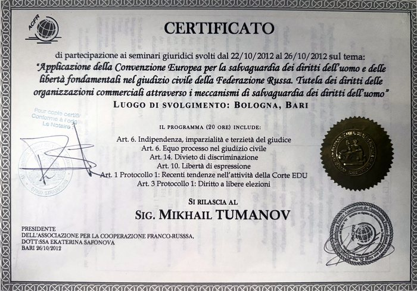
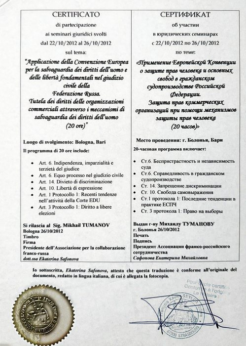
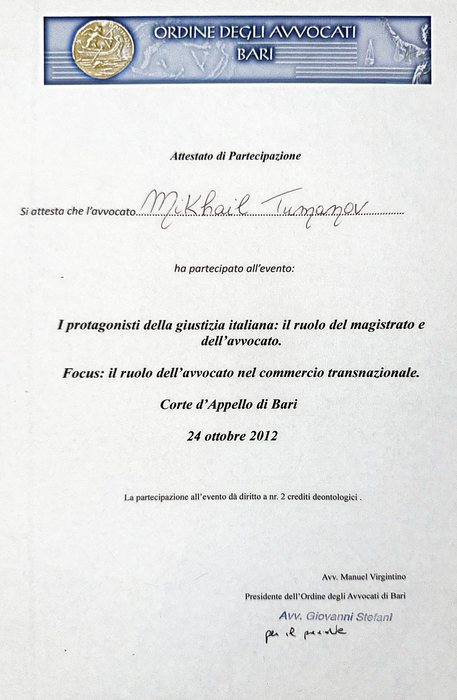

В интересах гражданина России, в отношении которого иностранное государство инициировало уголовное преследование и розыск через Интерпол, подготовлено и подано обращение в Комиссию по контролю за файлами Интерпола (CCF). Преследование было политизированным и связано с высказываниями доверителя в интернете. По решению CCF красное уведомление удалено. После этого доверитель выезжает за рубеж без задержаний и продолжает заниматься бизнесом.
Адвокат по Интерполу и экстрадиции
Я, адвокат Туманов Михаил Фёдорович (рег. № 23/7096, Филиал № 78 Краснодарской краевой коллегии адвокатов), консультирую и веду поручения по делам с международным элементом: когда человека разыскивают через Интерпол, когда иностранное государство запрашивает его выдачу или когда нужно защитить его права перед российскими и зарубежными органами.
Интерполовский розыск, как правило, обнаруживается неожиданно: при пересечении границы, при проверке документов, при открытии счёта или получении визы. В такой ситуации важно не терять время и не принимать поспешных решений. На консультации разбираю, какие сведения о вас могут быть в базах Интерпола, какие органы участвуют и какие процессуальные шаги возможны. Исход дела адвокат обещать не вправе: решение принимают компетентные органы.
С чем можно обратиться
- Снятие красного уведомления Интерпола. Правовой анализ оснований розыска, проверка соответствия уведомления Уставу и Правилам обработки данных Интерпола, подготовка и подача обращения в Комиссию по контролю за файлами Интерпола (CCF).
- Синие уведомления и диффузии. Анализ запросов, которые направляются для установления личности и местонахождения, а также диффузий, распространяемых национальными бюро напрямую; обжалование в тех же процедурах.
- Запрос в CCF о наличии сведений. Если вы не знаете, есть ли о вас данные в базах Интерпола, можно направить запрос о доступе к информации и уже по его итогам решать, что делать дальше.
- Экстрадиция. Защита по вопросам выдачи лица иностранному государству и противодействие экстрадиции на международном уровне, в том числе по делам, связанным с Францией. Во Франции работаю лично, без привлечения французских коллег.
- Взаимодействие с Интерполом. Подготовка обращений, переписка с Генеральным секретариатом и CCF, сопровождение на всех этапах рассмотрения.
- Документы на трёх языках. Подготовка и подача обращений, жалоб и пояснений на русском, английском и французском языках.
- Защита в компетентных органах России. Представление интересов в Национальном центральном бюро Интерпола МВД России (НЦБ Интерпола), в прокуратуре и в суде по вопросам розыска и выдачи.
- Экспертиза и правовые заключения. Анализ материалов, оценка рисков, письменное заключение по ситуации с розыском или запросом о выдаче.
Красное уведомление: что важно знать
Красное уведомление (Red Notice) — это просьба к правоохранительным органам стран — членов Интерпола установить местонахождение человека и временно задержать его до решения вопроса о выдаче. Синее уведомление (Blue Notice) направляется, чтобы получить сведения о личности, местонахождении или деятельности человека. Диффузия — запрос, который национальное бюро одной страны рассылает другим странам напрямую.
Устав Интерпола запрещает организации любое вмешательство в дела политического, военного, религиозного или расового характера (статья 3). Если преследование связано, например, с политической позицией, высказываниями в интернете или коммерческим спором, это может стать основанием для обращения в CCF. Подходит ли это к вашей ситуации, видно только после изучения документов.
Экстрадиция, в том числе во Францию и из Франции
Выдача лица другому государству регулируется международными договорами и национальным законодательством каждой страны. В России порядок выдачи установлен главой 54 УПК РФ, а гражданин России не может быть выдан другому государству (статья 61 Конституции РФ). Во Франции запрос о выдаче рассматривается в судебном порядке, а затем решение принимается на уровне правительства.
По делам, связанным с Францией, работаю лично: сам изучаю материалы, готовлю и подаю документы на французском языке и взаимодействую с компетентными органами, без привлечения французского коллеги.
Работа по экстрадиционному делу обычно включает анализ запроса и приложенных материалов, подготовку позиции, документов и переводов, а также координацию с органами, которые рассматривают запрос. Конкретный объём и формат работы фиксируются в соглашении.
Как строится работа
- Первая консультация — очно в Краснодаре, ул. Северная, 443, офис 311, или дистанционно по видеосвязи. Документы удобно направить заранее.
- Анализ ситуации: какие уведомления или запросы могут существовать, кто инициатор, какие сроки и риски.
- Подготовка и подача документов в CCF, НЦБ Интерпола, прокуратуру, суд или иные органы — на нужном языке.
- Сопровождение до получения ответа компетентного органа и обсуждение дальнейших шагов.
Практика
Сведения обезличены. Результат по каждому делу зависит от его обстоятельств.
Международное обучение
22–26 октября 2012 года — участник юридических семинаров в Болонье и Бари (Италия).
Сертификат об участии в юридических семинарах с 22/10/2012 по 26/10/2012 по теме «Применение Европейской Конвенции о защите прав человека и основных свобод в гражданском судопроизводстве Российской Федерации. Защита прав коммерческих организаций при помощи механизмов защиты прав человека (20 часов)». Место проведения: г. Болонья, Бари. Выдан г-ну Михаилу Туманову. Президент Ассоциации франко-российского сотрудничества Сафонова Е. М.
Программа включала: ст. 6 (беспристрастность и независимость суда, справедливость в гражданском судопроизводстве), ст. 10, ст. 14 Конвенции, ст. 1 и 3 Протокола № 1, последние тенденции в практике ЕСПЧ.
Участие в мероприятии Коллегии адвокатов Бари «Главные участники итальянского правосудия: роль судьи и адвоката. Роль адвоката в транснациональной торговле», Апелляционный суд Бари, 24 октября 2012 г.






Нажмите на документ, чтобы открыть его крупнее.
Как связаться
Телефон: 8 993 321-48-85. Почта: tumanovzao@mail.ru. Заявку можно оставить на главной странице, написать в WhatsApp или в Telegram. График: ежедневно 10:00–24:00. Сведения, которые вы сообщаете адвокату, охраняются адвокатской тайной.
Вопросы
Как узнать, объявлен ли я в розыск через Интерпол?
Публично на сайте Интерпола видна лишь небольшая часть красных уведомлений. Надёжный способ — направить запрос о доступе к сведениям в Комиссию по контролю за файлами Интерпола (CCF). Помогу подготовить и подать такой запрос на английском или французском языке и оценить ответ.
Можно ли снять красное уведомление Интерпола?
Удаление или изменение сведений возможно, если уведомление не соответствует Уставу и правилам Интерпола: например, преследование носит политический характер, связано с высказываниями или коммерческим спором, нарушены права человека или данные неточны. Решение принимает CCF, исход адвокат обещать не вправе. Шансы и подходящие доводы видны после изучения документов.
Чем красное уведомление отличается от синего и от диффузии?
Красное уведомление — просьба установить местонахождение человека и временно задержать его до решения вопроса о выдаче. Синее — просьба собрать сведения о личности, местонахождении или деятельности человека. Диффузия — запрос, который национальное бюро одной страны рассылает другим странам напрямую. Все три вида сведений можно оспаривать.
Выдаст ли Россия своего гражданина другому государству?
Нет. Согласно статье 61 Конституции РФ гражданин России не может быть выслан за пределы страны или выдан другому государству. Это не исключает уголовного преследования внутри страны, поэтому по такой ситуации всё равно нужна консультация.
Работаете ли вы по делам об экстрадиции во Францию или из Франции?
Да, принимаю обращения по вопросам экстрадиции, связанным с Францией, и работаю по ним лично, без привлечения французского коллеги: анализ запроса о выдаче, подготовка позиции и документов на французском, английском и русском языках, взаимодействие с компетентными органами. Конкретный объём работы определяется после консультации и фиксируется в соглашении.
Можно ли проконсультироваться дистанционно, если я за границей?
Да. Консультацию можно провести по видеосвязи, документы удобно направить заранее. Сведения, которые вы сообщаете, охраняются адвокатской тайной.